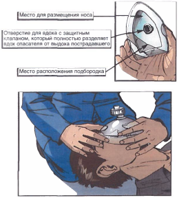

Билет №4
Вопрос 1. Допуск к самостоятельной работе слесаря КИПиА. (ИОТП-13-13, п.1.1)
Ответ:
К самостоятельной работе по профессии слесарь по контрольно-измерительным приборам и автоматике (далее - КИПиА) допускаются лица, не моложе 18 лет, прошедшие:
предварительное медицинское освидетельствование, вводный инструктаж по охране труда, первичный инструктаж на рабочем месте, стажировку на рабочем месте;
обученные безопасным методам и приемам выполнения работ и прошедшие проверку знаний требований правил и норм по охране труда и других нормативно-технических документов в пределах требований предъявляемых к профессии определенных «Объёмом проверки знаний электротехнического и электротехнологического персонала НГДУ «Талаканнефть».
Вопрос 2. Требования охраны труда к средствам защиты от падения с высоты. (ИОТВ-60-15, п.2.3.)
Ответ:
2.3 Предохранительные (страховочные) пояса
2.3.3. Работник обязан быть ознакомлен под подпись с перечнем работ подразделения и знать их на практике, выполняемых в поясах различного на значения, а также с требованиями инструкции по эксплуатации пояса завода-изготовителя, регламентирующего порядок застегивания пряжки ремня и по рядка регулировки элементов. Запрещается применять пояс другого типа для предусмотренных работ, а также самостоятельно изменять схему застегивания поясного ремня. В случае сомнения в правильности порядка застегивания пояса работник обязан убедиться в инструкции завода-изготовителя, а также подтвердить установленный порядок застегивания пряжки у непосредственного руководителя работ.
2.3.4. Перед началом производства работ работник обязан получить у руководителя работ с росписью в журнале выдачи СИЗ предохранительный пояс, соответствующий характеру выполняемой работы (I, II, III, IV групп). В случае получения предохранительного пояса другого типа работник обязан потребовать его замены у руководителя работ на соответствующий характеру работ. Ответственность за подбор предохранительного пояса несут совместно руководитель работ и работник, применяющий предохранительный пояс для выполнения определенного вида работ. В случае если по условиям производства работ работник самостоятельно определяет необходимость применения дополнительного страховочного стропа или страховочной веревки, он обязан прекратить работы, спуститься с высоты и потребовать у руководителя работ дополнительной страховки или замены пояса на другой тип. В случае если работник при производстве работ на высоте испытывает неудобство или определяет необходимость дополнительной регулировки элементов пояса (в т.ч. стропа), он обязан прекратить работы, спуститься с высоты и отрегулировать необходимые параметры пояса.
2.3.6. Срок эксплуатации предохранительного пояса предусмотрен в паспорте пояса, но не превышает 5 лет. После указанного срока пояс должен быть изъят из эксплуатации, не смотря на положительные результаты испытаний. Работы в поясе с истекшим сроком эксплуатации запрещаются.
2.3.7. Подготовка поясов к работе. Перед началом работы пояс должен подвергаться внешнему осмотру с целью проверки его в целом и несущих элементов в отдельности. Должны быть проверены:
места сшивок;
состояние деталей из тканевых материалов;
состояние металлических деталей;
целостность шлевок кушака свобода перемещения подвижной рамки пряжки;
правильность закрепления стропа на поясе; работоспособность карабина стропа;
данные специальной таблички (наличие инвентарного номера и даты следующего испытания).
2.3.8. На каждом поясе на видном месте заводом-изготовителем должны быть нанесены:
знак соответствия;
товарный знак предприятия-изготовителя;
тип, размер пояса и дата изготовления;
клеймо ОТК;
обозначение стандарта или технических условий.
2.3.9. Результаты осмотра заносятся в журнал осмотра СИЗ лицом, оп-ределяющим объем работ или выдающим задание. Не допускается выдача поясов с выявленными недостатками.
2.3.10. Работник, которому поручена работа, перед выездом на место производства работ дополнительно осматривает пояс и проверяет его размер (подгоняет ремень и лямки), расписываясь в журнале выдачи СИЗ. При про-изводстве работ на высоте более 6 метров допускается пользовать предохранительными поясами с амортизаторами. При работах на высоте менее 6 метров применяются пояса без амортизаторов.
2.3.11. Запрещается эксплуатация пояса, имеющего разрывы ниток в сшивках, надрывы, прожоги, надрезы поясного ремня, лент стропа, нарушения заклепочных соединений, деформированные или покрытые коррозией металлические узлы и детали.
2.3.12. Запрещается эксплуатация стропов, карабины которых при про-верке не закрываются автоматически легко и без заеданий.
2.3.14. Запрещается самостоятельный ремонт пояса.
2.3.15. Порядок работы. Пояс должен быть одет по размеру и закреплен на все предусмотрен-ные элементы (лямки и т.д.), отрегулирован под размеры одежды, при этом не должен стеснять движения и создавать неудобство в работе. Не допускается частичное одевание элементов предохранительного или страховочного поясов. Длина опорного (страховочного) стропа при работе должна быть отрегулирована таким образом, чтобы возможная высота свободного падения не превышала 0,5 м. Регулировка стропа производится регулятором длины (при его наличии). Регулировка цепного стропа производится, например, за счет двойного охватывания элемента конструкции. При производстве любых работ карабин стропа должен быть закреплен.
Запрещается крепление карабина стропа за элементы конструкции, а за крепежное кольцо 5, а строп пояса охватывать элементы конструкции. также за сам строп, как показано на рисунке. При производстве работ пояс должен плотно прилегать к телу человека. Длина свободного конца ремня, после того как пояс затянут - должна быть не менее 25 сантиметров, как показано на рисунке.
2.3.16. Пояса могут быть с одним или двумя стропами, строп может быть съемным или жестко закрепленным в системе пояса, регулируемым или нерегулируемым по длине.
Вместо второго стропа допускается использование страховочной веревки. При наличии двух стропов первый строп используется как удерживающая система, например при подъеме на высоту, производстве работ как точка опоры с целью освобождения рук. Второй строп или страховочная веревка используется как дополнительная защита для страховки работающего в опасных условиях труда {при неудобном расположении рабочего места на высоте), при необходимости перезакрепиться первым (удерживающим) стропом.
2.3.17. В случае необходимости страховки от падения высоты работник применяет пояса II или III типов и при этом зацепляется вторым стропом за элементы конструкции или страхуется вторым работником, находящимся на земле, при помощи страховочного каната, зацепленного за кольцо лямок.
2.3.18. Спасательные пояса для работы внутри емкостей, колодцах и т.д. должны иметь наплечные ремни кольцом со стороны спины на их пересечении для крепления веревки.
Пояс должен подгоняться таким образом, чтобы кольцо располагалось не ниже лопаток. Применение поясов без наплечных ремней внутри емкостей запрещается.
2.3.19. Применение поясов не по размеру, а также их ушивка не допускается.
2.3.20. Для выполнения огневых работ следует применять пояса со стропом из цепи или стального каната.
2.3.21. Испытания предохранительных и спасательных поясов, поясных карабинов должны производиться не реже одного раза в 6 месяцев в РММ (ПРЦО, КРС). Результаты испытаний оформляются протоколом с записью в специальном журнале. Наружный осмотр поясов, лямок, стропов, веревок производят не реже одного раза в 10 дней, а также перед каждым применением.
2.3.22. Перед выдачей поясов, карабинов и веревок должен производиться их наружный осмотр. Наружный осмотр производится ежедневно как перед работой, так и после работы.
2.3.23. Не допускаются к применению пояса, имеющие следы глубокой коррозии на металлических частях, порчу швов и другие неисправности, ослабляющие прочность пояса.
2.3.24. Не допускается применение карабина в следующих случаях:
заедание затвора карабина при его открывании;
деформация карабина (затвор не закрывается);
наличие выступов и неровностей на месте входа крепления в замок;
слабость пружины затвора;
наличие на поверхности карабина шероховатостей и острых выступов.
2.3.25. Величина зева карабина должна быть от 14 до 25 мм.
2.3.26. Каждый пояс и веревка должны иметь табличку с присвоенным инвентарным номером и датой следующего испытания.
2.3.27. При выявлении работником просроченного срока испытания работы не производятся и пояс возвращается руководителю работ для замены на испытанный.
2.3.28. В случаях, когда для страховки поясом длина стропа недостаточна, необходимо применять совместно с поясом дополнительные средства защиты, к которым относятся:
удлинители стропа пояса,
страховочные канаты,
полуавтоматические верхолазные устройства,
ловители,
специальные приспособления,
вводимые в элементы конструкций или средств подмащивания,
разработанные в установленном порядке и удовлетворяющие требованиям действующих нормативных документов.
2.3.29. При производстве работ работнику запрещается:
закрепление карабином ниже уровня опирания ступней ног при выполнении рабочих операций в положении стоя;
выполнение огневых работ с опиранием на строп пояса, т.е. в условиях его натяжения;
сбивание остатков электродов из зева электрододержателя путем удара о строп;
внесение каких-либо изменений в конструкцию пояса без согласования с изготовителем;
использование пояса не по назначению.
2.3.30. Способы закрепления стропом пояса должны быть такими, что бы величина свободного падения человека с высоты не превышала одной максимальной длины стропа.
При работе на высоте менее 3 м от земли или перекрытия точка закрепления карабином должна быть расположена не менее чем на 1,5 м выше уровня опирания ступней ног.
Опора, к которой закрепляют карабин пояса {или элементы, выполняющие ее функцию), должна иметь прочность не менее 15 кН (1500 кгс).
Вопрос 3. Маркировка взрывозащиты. Уровень взрывозащиты. (ИОТВ-102-14, п.1.16.)
Ответ:
По уровням взрывозащиты электрооборудование подразделяется:
Электрооборудование повышенной надежности против взрыва -взрывозащищенное электрооборудование, в котором взрывозащита обеспечивается только в признанном нормальном режиме работы. Знак уровня - 2.
Взрывобезопасное электрооборудование - взрывозащищенное электрооборудование, в котором взрывозащита обеспечивается как при нормальном режиме работы, так и при вероятных повреждениях, определяемых условиями эксплуатации, кроме повреждений средств взрывозащиты. Знак уровня -1.
Особо взрывобезопасное электрооборудование - взрывозащищенное электрооборудование, в котором по отношению к взрывоопасному электрооборудованию приняты дополнительные средства взрывозащиты, предусмотренные стандартом на виды взрывозащиты. Знак уровня - 0.
Вопрос 4. Назовите правила проведения искусственной вентиляции легких. (Инструкция для проведения обучения оказания первой помощи пострадавшим на производстве, п.5.6.- 5.6.1.)
Ответ:
5.6. Правила проведения вдоха искусственной вентиляции легких (далее - ИВЛ) способом «изо рта в рот»:
Правило первое.
Правой рукой обхватить подбородок так, чтобы пальцы, расположенные на нижней челюсти и щеках пострадавшего, смогли разжать и раздвинуть его губы.
Правило второе.
Левой рукой зажать нос.
Правило третье.
Запрокинуть голову пострадавшего и удерживать ее в таком положении до окончания проведения вдоха.
Правило четвертое.
Плотно прижаться губами к губам пострадавшего и сделать в него максимальный выдох. Если во время проведения вдоха ИВЛ пальцы правой руки почувствуют раздувание щек, можно сделать безошибочный вывод о неэффективности попытки вдоха.
Правило пятое.
Если первая попытка вдоха ИВЛ оказалась неудачной, следует увеличить угол запрокидывания головы и сделать повторную попытку.
Правило шестое.
Если вторая попытка вдоха ИВЛ оказалась неудачной, то необходимо сделать 30 надавливаний на грудину, повернуть пострадавшего на живот, очистить пальцами ротовую полость и только затем сделать вдох ИВЛ.
Если невозможно преодолеть чувство брезгливости или выделения изо рта пострадавшего представляют угрозу для здоровья спасателя? Следует использовать специальную пластиковую маску для проведения ИВЛ способом «изо рта в рот».
5.6.1. Правила использования защитной маски для безопасного проведения ИВЛ:
Внимание! Когда контакт с выделениями из ротовой полости пострадавшего представляет угрозу инфицирования, отравления ядовитыми газами, искусственное дыхание можно проводить только через специальную защитную маску.
Правило первое.
Правильно взять маску в правую руку. Захватить ее пальцами правой руки так, чтобы большая часть ладони осталась свободной.
Правило второе.
Свободной частью ладони обхватить подбородок. Придерживая пальцами маску на лице, запрокинуть голову пострадавшего.
Правило третье.
Левой рукой прижать маску к лицу.
Правило четвертое.
Прижаться губами к отверстию с защитным клапаном и сделать в него выдох.
Когда проведение ИВЛ «изо рта в рот» представляет угрозу для здоровья спасателя, а защитной маски нет? Проводить непрямой массаж сердца - безвентиляционную реанимацию - до прибытия медицинского персонала или появления защитной маски.
(см. п.5.5)
5.5 Правила проведения непрямого массажа сердца и безвентиляционной реанимации:
Правило первое.
Расположить основание правой ладони выше мечевидного отростка так, чтобы большой палец был направлен на подбородок или живот пострадавшего. Левую ладонь расположить на ладони правой руки.
Правило второе.
Переместить центр тяжести на грудину пострадавшего и проводить непрямой массаж сердца прямыми руками.
Правило третье.
Продавливать грудную клетку не менее чем на 3-5 см с частотой не реже 60 раз в минуту.
Правило четвертое.
Каждое следующее надавливание начинать только после того, как грудная клетка вернется в исходное положение.
Правило пятое.
Оптимальное соотношение надавливаний на грудную клетку и вдохов искусственной вентиляции легких - 30:2, независимо от количества участников реанимации.
Правило шестое.
По возможности приложить холод к голове.
Вопрос 5. Проверка исправности ручного слесарного инструмента. (ИОТВ-73-15, п.2.9)
Ответ:
Молоток (кувалда) должен быть надежно насажен на исправную рукоятку (без трещин);
Бойки молотков и кувалд должны иметь гладкую слегка выпуклую поверхность без косины, сколов, выбоин, трещин и заусенцев.
Рукоятки молотков, кувалд и другого инструмента ударного действия должны изготовляться из сухой древесины твердых лиственных пород (березы, дуба, бука, клена, ясеня, рябины, кизила, граба) без сучков и косослоя или из синтетических материалов, обеспечивающих эксплуатационную прочность и надежность в работе. Использование рукояток, изготовленных из мягких и крупно слоистых пород дерева (ели, сосны и т.п.), а также из сырой древесины запрещается.
Рукоятки молотков, зубил и т.п. должны иметь по всей длине в сечении овальную форму, быть гладкими и не иметь трещин.
К свободному концу рукоятки должны несколько утолщаться (кроме кувалд) во избежание выскальзывания рукоятки из рук при взмахах и ударах инструментом. У кувалд рукоятка к свободному концу несколько утончается. Кувалда насаживается на рукоятку в сторону утолщенного конца без клиньев.
Ось рукоятки должна быть строго перпендикулярна продольной оси инструмента. Клинья для укрепления инструмента на рукоятке должны выполняться из мягкой стали и иметь насечки (ерши).При забивании клиньев в рукоятки молотков их необходимо удерживать клещами.
Зубила, крейцмейсели, бородки, обжимки и керны не должны иметь сбитых или сношенных затылков с заусенцами, выбоин, трещин, а их боковые грани - без острых ребер;
угол заточки острия зубил должен соответствовать обрабатываемому металлу.
Длина инструмента ударного действия должна быть не менее 150 мм.
Угол заострения рабочей части зубила должен соответствовать обрабатываемому материалу: для рубки чугуна и бронзы - 70°, для стали средней твердости - 60, для меди и латуни - 45, для алюминия и цинка - 35°. Средняя часть зубила должна иметь овальное или многогранное сечение без острых ребер и заусенцев на боковых гранях, ударная - форму усеченного конуса.
Поверхностная твердость рабочей части зубила для кузнечных работ на длине 30 мм для холодной рубки должна быть 54-58 HRC, для горячей - 50-55 HRC, твердость ударяемой части на длине 20 мм - 30-40 HRC.
При работе клиньями или зубилами с помощью кувалд должны применяться кпинодержатели с рукояткой длиной не менее 0,7 м.
Набор гаечных ключей должен соответствовать размерам болтов и гаек, если ключ не подходит к гайкам, пользоваться раздвижными ключами;
Губки гаечных ключей должны быть параллельны, а рабочие поверхности не иметь битых и смятых граней.
Размеры зева (захвата) гаечных ключей не должны превышать размеров головок болтов (граней гаек) более чем на 0,3 мм. Применение подкладок при зазоре между плоскостями губок и головок болтов или гаек более допустимого запрещается.
Рабочие поверхности гаечных ключей не должны иметь сбитых скосов, а рукоятки - заусенцев. На рукоятке должен быть указан размер ключа. При отвертывании и завертывании гаек и болтов удлинять гаечные ключи дополнительными рычагами, вторыми ключами или трубами запрещается. При необходимости следует применять ключи с длинными рукоятками. Допускается удлинять рукоятки ключей дополнительными рычагами только типа "звездочка".
Напильники, шаберы, отвертки, ножовки должны иметь рукоятки длиной не менее 150 мм.
Насаженные деревянные рукоятки инструмента должны быть прочно насажены и оборудованы бандажными кольцами.
Работать с инструментом, рукоятки которого посажены на заостренные концы (напильники, шаберы и др.) без металлических бандажных колец, запрещается.
Полотно ножовки должно быть хорошо натянуто и не иметь повреждений.
Рукоятки воротов и плашкодержателей должны быть с гладкой поверхностью, без заусенцев и забоин, лезвия ножниц - хорошо заточены и шарнир не разболтан, ролики труборезов - смазаны и не качаются.
Пневмозубила должны иметь устройство, защищающее от вылета зубила.
Шлифовальные машинки должны иметь защитный кожух.
Вопрос 6. В каких случаях пострадавшему проводятся реанимационные мероприятия и как они выполняются (с отработкой практических навыков на тренажере). (Инструкция для проведения обучения оказания первой помощи пострадавшим на производстве, п. 4.2.-5.9.)
Ответ:
4.2 Последовательность действий при оказании первой медицинской помощи:
Такая очередность действий позволит сохранить жизнь пострадавшего до прибытия медицинских работников |
1. |
Нет сознания и нет пульса на сонной артерии (клиническая смерть) |
 |
Приступить к реанимации (см. п.5) |
2. |
Нет сознания, но есть пульс на сонной артерии (обморок или начало развития комы) |
 |
Попытаться привести пострадавшего в сознание (см. п.6)
Если в течени 3-4 минут это не удалось, обязательно повернуть его на живот (см. п.7) |
3. |
Обильное кровотечение |

|
Быстро пережать конечность выше раны и наложить жгут (см. п.9) |
4. |
Наличие раны |

|
Наложить стерильные повязки (см. п.10.3) |
5. |
Признаки перелома конечностей |

|
Наложить транспортную шину (см. п.11) |
5. Правила определения признаков клинической смерти:
Правило первое.
Чтобы сделать вывод о наступлении клинической смерти у неподвижно лежащего пострадавшего, достаточно убедиться в отсутствии сознания и пульса на сонной артерии.
Правило второе.
Не следует терять время на определение сознания путем ожидания ответов на вопросы: «Все ли у тебя в порядке? Можно ли приступить к оказанию помощи?». Надавливание на шею в области сонной артерии является сильным болевым раздражителем.
Правило третье.
Не следует терять время на определение признаков дыхания. Они трудноуловимы, и на их определение с помощью ворсинок ватки, зеркальца или наблюдения за движением грудной клетки можно потерять неоправданно много времени. Самостоятельное дыхание без пульса на сонной артерии продолжается не более минуты, а вдох искусственного дыхания взрослому человеку ни при каких обстоятельствах не может причинить вреда.
Если подтвердились признаки клинической смерти? Быстро освободить грудную клетку от одежды приступить к сердечно-легочной реанимации см. пп.5.5; 5.6.

5.1. Правила определения пульса на сонной артерии:
Правило первое.
Расположить четыре пальца на шее пострадавшего (см. п.5.4) и убедиться в отсутствии пульса на сонной артерии.
Правило второе.
Определять пульс следует не менее 10 секунд.
5.2. Правила освобождения грудной клетки от одежды для проведения реанимации:
Правило первое.
Расстегнуть пуговицы рубашки и освободить грудную клетку.
Правило второе.
Джемпер, свитер или водолазку приподнять и сдвинуть к шее.
Правило третье.
Майку, футболку или любое нательное белье из тонкой ткани можно не снимать. Но прежде чем наносить удар по грудине или приступать к непрямому массажу сердца, следует убедиться, что под тканью нет нательного крестика или кулона.
Правило четвертое.
Поясной ремень обязательно расстегнуть или ослабить. Известны случаи, когда во время проведения непрямого массажа сердца печень повреждалась о край жесткого ремня.

Внимание! Перед тем как приступить к реанимации, необходимо уложить пострадавшего на жесткую и ровную поверхность, освободить грудную клетку от одежды и определить анатомические ориентиры (см. п. 5.4).
5.3. Правила освобождения грудной клетки от одежды для проведения реанимации, в случаях, когда на женщине надет бюстгальтер - его надо сдвинуть ближе к шее.
5.4. Анатомические ориентиры, необходимые для проведения сердечно-легочной реанимации:

5.5. Правила проведения непрямого массажа сердца и безвентиляционной реанимации:
Правило первое.
Расположить основание правой ладони выше мечевидного отростка так, чтобы большой палец был направлен на подбородок или живот пострадавшего. Левую ладонь расположить на ладони правой руки.
Правило второе.
Переместить центр тяжести на грудину пострадавшего и проводить непрямой массаж сердца прямыми руками.
Правило третье.
Продавливать грудную клетку не менее чем на 3-5 см с частотой не реже 60 раз в минуту.
Правило четвертое.
Каждое следующее надавливание начинать только после того, как грудная клетка вернется в исходное положение.
Правило пятое.
Оптимальное соотношение надавливаний на грудную клетку и вдохов искусственной вентиляции легких - 30:2, независимо от количества участников реанимации.
Правило шестое.
По возможности приложить холод к голове.
 Внимание! При каждом надавливании на грудную клетку происходит активный выдох, а при ее возвращении в исходное положение — пассивный вдох. Когда выделения
изо рта пострадавшего представляют угрозу для здоровья спасающего, можно ограничиться проведением непрямого массажа сердца, т.е. безвентиляционным вариантом реанимации.
Внимание! При каждом надавливании на грудную клетку происходит активный выдох, а при ее возвращении в исходное положение — пассивный вдох. Когда выделения
изо рта пострадавшего представляют угрозу для здоровья спасающего, можно ограничиться проведением непрямого массажа сердца, т.е. безвентиляционным вариантом реанимации.
Внимание! Чтобы непрямой массаж сердца был эффективным, его необходимо проводить на ровной жесткой поверхности.
Если под ладонью появился неприятный хруст (признак перелома ребер)? Уменьшить не глубину и силу, а ритм надавливаний и ни в коем случае не прекращать непрямой массаж сердца.
5.6. Правила проведения вдоха искусственной вентиляции легких (далее - ИВЛ) способом «изо рта в рот»:
Правило первое.
Правой рукой обхватить подбородок так, чтобы пальцы, расположенные на нижней челюсти и щеках пострадавшего, смогли разжать и раздвинуть его губы.
Правило второе.
Левой рукой зажать нос.
Правило третье.
Запрокинуть голову пострадавшего и удерживать ее в таком положении до окончания проведения вдоха.
Правило четвертое.
Плотно прижаться губами к губам пострадавшего и сделать в него максимальный выдох. Если во время проведения вдоха ИВЛ пальцы правой руки почувствуют раздувание щек, можно сделать безошибочный вывод о неэффективности попытки вдоха.
Правило пятое.
Если первая попытка вдоха ИВЛ оказалась неудачной, следует увеличить угол запрокидывания головы и сделать повторную попытку.
Правило шестое.
Если вторая попытка вдоха ИВЛ оказалась неудачной, то необходимо сделать 30 надавливаний на грудину, повернуть пострадавшего на живот, очистить пальцами ротовую полость и только затем сделать вдох ИВЛ.

Внимание! Нет необходимости разжимать челюсти пострадавшего, так как зубы не препятствуют прохождению воздуха. Достаточно разжать только губы.
Если невозможно преодолеть чувство брезгливости или выделения изо рта пострадавшего представляют угрозу для здоровья спасателя? Следует использовать специальную пластиковую маску для проведения ИВЛ способом «изо рта в рот».
5.6.1. Правила использования защитной маски для безопасного проведения ИВЛ:
Внимание! Когда контакт с выделениями из ротовой полости пострадавшего представляет угрозу инфицирования, отравления ядовитыми газами, искусственное дыхание можно проводить только через специальную защитную маску.
Правило первое.
Правильно взять маску в правую руку. Захватить ее пальцами правой руки так, чтобы большая часть ладони осталась свободной.
Правило второе.
Свободной частью ладони обхватить подбородок. Придерживая пальцами маску на лице, запрокинуть голову пострадавшего.
Правило третье.
Левой рукой прижать маску к лицу.
Правило четвертое.
Прижаться губами к отверстию с защитным клапаном и сделать в него выдох.
Когда проведение ИВЛ «изо рта в рот» представляет угрозу для здоровья спасателя, а защитной маски нет? Проводить непрямой массаж сердца - безвентиляционную реанимацию (см. п.5.5) - до прибытия медицинского персонала или появления защитной маски.
5.7. Правила проведения реанимации более 10-15 минут:
Внимание! Мужчина со средними физическими данными может проводить комплекс сердечно-легочной реанимации не более 3-4 минут. Вдвоем с помощником - не более 10 минут. Втроем — с лицами любого пола, возраста и физических данных - более часа.
Правило первое.
Первый участник делает вдох искусственного дыхания. Контролирует реакцию зрачков и пульс на сонной артерии и информирует партнеров о состоянии пострадавшего: «Есть реакция зрачков!» или «Есть пульс!» и т.п.
Правило второе.
Второй участник проводит непрямой массаж сердца и отдает команду: «Вдох!». Контролирует эффективность вдоха искусственного дыхания по подъему грудной клетки и констатирует: «Вдох прошел!» или «Нет вдоха!».
Правило третье.
Третий участник приподнимает ноги пострадавшего для улучшения притока крови к сердцу. Восстанавливает силы и готовится сменить второго участника. Координирует действия.
Правило четвертое.
Через каждые 2-3 минуты реанимации обязательно производится смена участников и проверяется наличие самостоятельного пульса.
Правило пятое.
По возможности приложить холод к голове пострадавшего.
 5.8. Правила расположения участников реанимации:
5.8. Правила расположения участников реанимации:
Внимание! Такое расположение участников позволяет:
избегать столкновений головами;
рационально использовать силы (физически слабого участника следует чаще располагать в ногах пострадавшего, но при этом он должен координировать действия всей команды);
привлечь к реанимации любого необученного человека.

Сначала новичку следует доверить поддерживание ног, а затем задействовать в проведении реанимации.
5.9. Правила проведения реанимации в ограниченном пространстве:
Правило первое.
Комплекс реанимации можно проводить только в положении пострадавшего лежа на спине, на ровной жесткой поверхности.
Правило второе.
Обеспечить возможность запрокидывания головы пострадавшего для проведения ИВЛ.
Вопрос 7. Техническое обслуживание узлов учета газа. Периодичность, типовые операции, регламентирующие документы, оформление документации.
(Положение о техническом обслуживании и текущем ремонте средств автоматизации и телемеханизации, контрольно-измерительных приборов, СТО 36-2007, ПИ-04-14).
Ответ:
Вопрос 8. Проверка средств сигнализации, противоаварийных защит и блокировок устаноки для получения битума. Периодичность, типовые операции, регламентирующие документы, оформление документации. (Положение о техническом облуживании и текущем ремонте средств автоматизации и телемеханизации, контрольно-измерительных приборов, СТО-36-2007, ПИ-284-15)
Ответ: